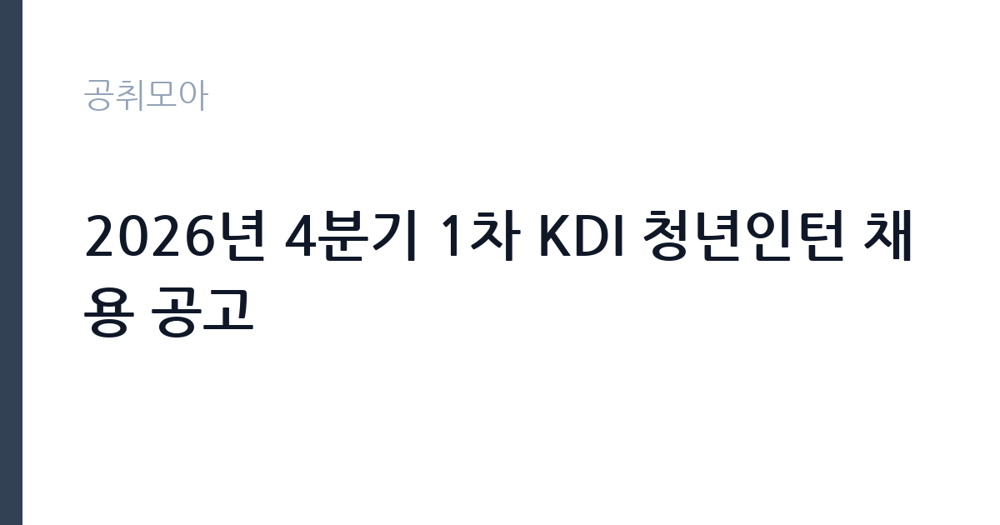

[공공기관] 2026년 4분기 1차 KDI 청년인턴 채용 공고
한국개발연구원 · 세종 · 마감 2026-10-22 (D-14) · 출처 나라일터

한눈에 보는 모집 조건
| 기관 | 한국개발연구원 |
|---|---|
| 공고명 | 2026년 4분기 1차 KDI 청년인턴 채용 공고 |
| 고용형태 | 청년인턴(체험형) |
| 근무지 | 세종 |
| 게시일 | 2026-10-08 |
| 마감일 | 2026-10-22 (D-14) |
지원자격, 이렇게 읽으세요
- 인턴 1명
- 접수 ~2026-10-22 마감
- 세부 조건은 원문 공고문 확인
청년인턴 모집이므로 연령과 학력 등 청년 요건을 충족하셔야 하며, 세부 자격은 원문 공고문에서 확인하셔야 합니다. 과거 KDI 청년인턴 모집에서는 북한경제연구실과 경제정보센터 정책정보허브팀, 중앙전산실 전산1팀, 중앙도서실 도서1팀 등 연구 지원과 정보 관리 부서에 배치되었습니다. 사무보조와 문서 작성, 문서 관리 역량이 기본적으로 요구되므로 OA 활용 능력을 갖춰 두시면 좋습니다. 장애인 제한경쟁 모집도 함께 진행되므로 해당 요건에 맞는 분은 별도 공고를 확인하십시오.
이 공고의 포인트
이 공고의 포인트는 국책연구기관 1호인 KDI에서 일할 수 있다는 점 자체입니다. 경제 정책 연구의 심장부에서 연구 지원과 행정 실무를 경험하면 공공기관과 연구직 진로를 준비하는 데 강력한 스펙이 됩니다. 세종 본원 근무로 국책연구단지 환경을 체험할 수 있고, 연구자와 행정 직원의 업무 방식을 가까이에서 배울 수 있습니다. 체험형 인턴은 정규직 전환과 무관하지만, 이후 KDI를 비롯한 국책연구기관과 공공기관 채용에서 실무 경험으로 인정받습니다. 정책과 경제 분야에 관심 있는 청년이라면 놓치기 아까운 기회입니다.
전형은 어떻게 진행되나
전형은 서류전형과 면접전형으로 진행됩니다. 공공기관 체험형 청년인턴 선발은 일반적으로 자격요건 충족 여부를 확인한 뒤 자기소개서 평가와 면접으로 최종 선발합니다. 자기소개서에서는 지원 동기와 직무 이해, 성실성을 중점적으로 평가하므로 KDI의 역할에 대한 이해를 보여주는 것이 중요합니다. 면접은 인성과 조직 적응력, 기본 소양을 확인하는 방식으로 진행될 가능성이 큽니다. 접수 마감은 2026년 10월 22일이며, 이후 일정은 KDI 홈페이지 채용 게시판에 안내됩니다.
이런 분께 추천해요
- 경제 정책과 국책연구기관 진로에 관심 있는 청년 구직자에게 추천합니다.
- 공공기관 사무와 연구 지원 실무 경험을 쌓고 싶은 분께 적합합니다.
- 세종 근무가 가능하고 성실한 근무 태도로 인턴십을 완주할 의지가 있는 분께 좋은 기회입니다.
지원 전 체크리스트
- 연령과 학력 등 청년인턴 자격요건을 공고문에서 먼저 대조하십시오.
- 자기소개서에는 KDI와 배치 부서의 업무를 이해하고 있음을 드러내십시오.
- OA 활용 능력(한글·엑셀·파워포인트)을 점검하고 필요하면 접수 전에 보완하십시오.
- 접수 마감일(10월 22일) 서버 혼잡을 피해 미리 제출을 완료하십시오.
모집 일정과 제출 타이밍
접수 마감은 2026년 10월 22일입니다. 자기소개서 작성에 시간을 들이시되 마감 사흘 전에는 제출을 마치는 것을 권장합니다. 서류전형 결과와 면접 일정은 마감 이후 KDI 홈페이지 채용 게시판에 공지됩니다. 체험형 인턴십은 분기 단위로 운영되므로 이번 4분기 1차 모집 이후 추가 모집이 있을 수 있습니다. 결과 발표 이후 즉시 근무가 가능한 일정을 유지하시는 편이 좋습니다.
직무 이해하기: 공공기관
KDI 청년인턴은 연구실과 정보센터, 전산실, 도서실 등 배치 부서의 사무 지원과 문서 관리, 자료 정리 업무를 담당합니다. KDI는 경제와 사회 제반 분야의 연구로 정부 정책 수립과 제도 개혁에 기여하는 기관이며, 청년인턴은 연구 행정의 실무를 보조하면서 정책 연구의 흐름을 배웁니다. 단순 사무보조를 넘어 세미나 준비와 자료 조사, 데이터 정리 등 연구 지원 업무에 참여할 기회가 있습니다. 국책연구기관의 업무 방식을 몸으로 익히는 자리이므로 적극적인 자세가 중요합니다.
자기소개서 작성 팁
자기소개서에서는 KDI 인턴에 지원한 이유를 구체적으로 쓰십시오. 경제 정책이나 연구 분야에 관심을 갖게 된 계기와 배치 희망 부서에서 배우고 싶은 점을 연결하시면 좋습니다. 사무보조와 문서 작성 경험을 언급할 때는 정확성과 기한 준수 사례를 들어 성실성을 보여주십시오. 인턴십 이후의 진로 계획(공공기관·연구직 준비 등)을 밝혀 인턴 경험을 성장으로 잇겠다는 의지를 드러내시면 좋은 평가를 받을 수 있습니다. 분량은 간결하게, 진정성 있게 작성하십시오.
면접 준비 포인트
면접에서는 인성과 성실성, 조직 적응력을 확인합니다. KDI가 어떤 기관인지 간단히 설명할 수 있도록 준비하고, 배치 부서 업무에 대한 이해를 보여주십시오. 단기 인턴십이므로 맡은 일을 끝까지 완수하겠다는 의지를 강조하시는 편이 좋습니다. 공공기관 인턴 면접의 단골 질문인 지원 동기와 강점, 협업 경험에 대한 답변을 미리 정리하십시오. 복장은 단정하게, 답변은 밝고 명확하게 하시길 권장합니다.
급여·근무조건 읽는 법
체험형 청년인턴의 보수는 기관별 인턴 보수 기준에 따라 월 단위로 지급되며, 정확한 금액은 원문 공고문에서 확인하셔야 합니다. 공공기관 체험형 인턴의 보수는 최저임금 수준 이상으로 책정되는 것이 일반적이나, KDI 이번 공고의 excerpt에는 보수표가 포함되어 있지 않으므로 원문에서 확인하시기 바랍니다. 4대보험 가입 여부와 근무 시간, 휴가 등 근무조건도 공고문에서 함께 확인하십시오. 경쟁률과 합격선은 공개되지 않았습니다.
자주 묻는 질문
- 체험형 인턴은 정규직으로 전환됩니까?
체험형 청년인턴은 일 경험 제공이 목적이며 정규직 전환과 연계되지 않습니다. 다만 국책연구기관 실무 경험은 이후 공공기관과 연구직 채용에서 경력으로 인정받을 수 있습니다. - 장애인 제한경쟁 모집과 일반 모집의 차이는 무엇입니까?
장애인 제한경쟁 모집은 응시 자격을 장애인으로 한정하는 별도 트랙입니다. 일반 모집과 중복 지원 가능 여부는 공고문에서 확인하시고, 해당 요건에 맞는 분은 본인에게 유리한 트랙을 선택하십시오. - 근무지와 근무 분야는 어디입니까?
근무지는 세종 KDI 본원이며 근무 분야는 일반직(연구 지원·사무)입니다. 과거 모집에서는 북한경제연구실과 경제정보센터, 중앙전산실, 중앙도서실 등에 배치되었으니 이번 분기의 배치 부서는 원문 공고문에서 확인하십시오.
함께 보면 좋은 공고
[공공기관] [설악산] 설악산국립공원 기간제 직원[탐방해설] 채용 추가접수 공고 — 마감 2026-10-16[공공기관] 2026년 4분기 1차 KDI 청년인턴 채용 공고(장애인 제한경쟁) — 마감 2026-10-22[공공기관] [설악산] 설악산국립공원 기간제 직원[탐방해설] 채용 추가접수 공고 — 마감 2026-10-16출처: 나라일터 공개정보를 바탕으로 공취모아가 정리한 안내글입니다. 모집 조건·일정은 변경될 수 있으니 지원 전 반드시 원문 공고문을 확인하세요. 본 글은 정보 제공용이며 합격을 보장하지 않습니다.